Usage
General Info & Overview
What is Arbiter?
Arbiter is an open-source collaborative software tool and web application designed to build and document a shared understanding during data annotation tasks.
In subjective or complex data annotation tasks, low inter-annotator agreement often derives from two primary sources:
Task Underspecification: Ambiguity or gaps in the annotation guidelines where existing rules are vague, making it difficult to determine the label, especially for edge/difficult cases.
Misapplication: Annotators misunderstanding or incorrectly applying guidelines.
Unlike traditional post-hoc statistical methods that attempt to model disagreement after data collection is complete, Arbiter addresses disagreement during the active annotation process.
Key Features
Batch-Based Annotation and Real-Time Chat: Data is annotated in structured batches. When label disagreements occur, annotators discuss them synchronously in an integrated real-time chat interface.
Expert Adjudication and Guideline Revision: Disagreements that cannot be resolved between annotators are passed to an expert, who adjudicates the final label and updates the annotation guidelines (i.e., codebook).
Traceable Dataset Documentation: Every label assignment, discussion, expert decision rationale, and guideline revision is logged. This creates a complete audit trail that documents how the team’s interpretation evolved over time, serving as a reproducibility artifact for downstream dataset users.
User Login
To log into Arbiter, enter the credentials provided by your system administrator. The login interface is identical for annotators and experts

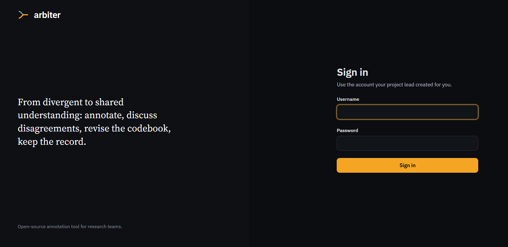
Figure 1: Arbiter Login Screen. Authentication page for Annotators and Experts
User Roles and Workflow Description
Arbiter structures data labeling around three distinct user roles and a multi-stage collaborative loop.
Users
Annotator: Independently label data batches, deliberate with peers in real-time chat regarding disagreed samples to resolve misapplications, and review codebook updates prior to starting subsequent batches.
Expert: Create projects, upload data batches, review annotators’ unresolved disagreements, assign final adjudicated labels, provide explanatory rationales, and edit the codebook.
Administrator: Manage groups and users.
Workflow

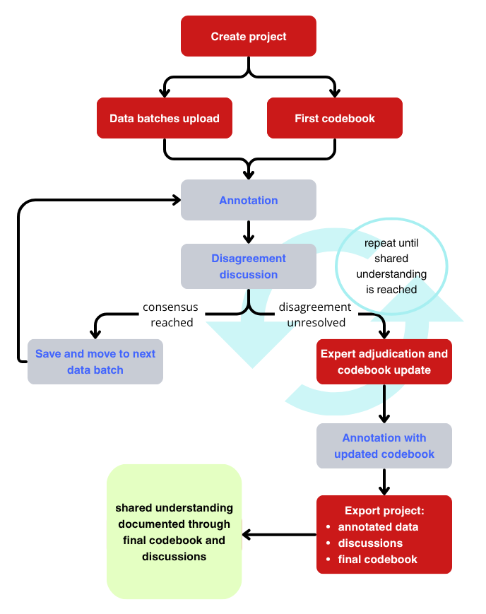
Figure 2: Arbiter Workflow
First batch and codebook upload: Expert user uploads batches and the first version of the annotation guidelines.
Annotation: Annotators independently assign labels according to current codebook guidelines.
Discussion (Resolving Misapplication): Once independent labeling for a batch is complete, samples with divergent labels automatically enter the discussion stage. Annotators use the real-time chat interface to discuss their reasoning. If they reach consensus, updated labels are saved. If they don’t, the sample is passed to the Expert.
Expert adjudication and codebook update (Resolving Underspecification): The expert selects the final decision for the samples with divergent label and updates the codebook to clarify the rule or edge case, writing the rationale on which is based the final decision.
Codebook synchronization and maturation: Before beginning the next batch, annotators read the updated codebook with changes highlighted. Over time, as guidelines mature, discussion counts and instruction edits decrease, signaling that the team has converged on a relatively stable, shared understanding.
2. Expert User Guide
1. Create a Project
To set up a new annotation project:
Log in with an Expert account and click Create Project in the navigation menu.
Fill out the project configuration form:
Project title: A name for your project.
Description: A summary defining the project scope and goals.
Annotators & Experts: Assign user profiles to their respective roles for this project.
Labels: Define labels along with custom display colors and hotkeys.
Click Create Project at the bottom of the page to finalize setup.

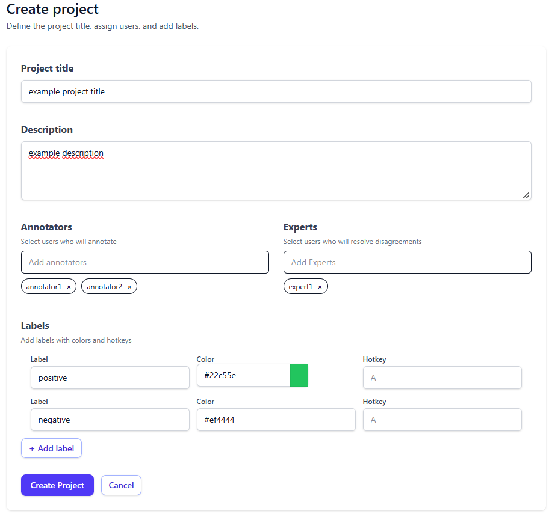
Figure 3: Project Creation Form. Filling in project title, description, user assignments, labels, display colors, and hotkeys.
2. Upload Batches
Once a project is created, data samples must be grouped and uploaded in batches:
Navigate to the project dashboard and click Create Batch.
In the modal dialog, select a dataset file (
CSVorXLSXcontaining atextcolumn) and select the designated annotators and experts for that batch.Upon upload, the new batch appears in the project’s Batches list in
Annotationmode.

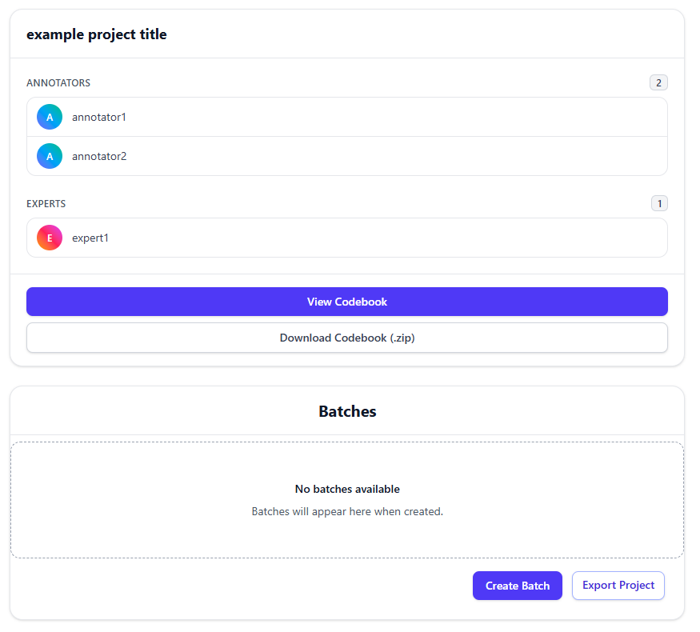
Figure 4: Initial Project Dashboard. Dashboard view prior to uploading dataset batches.

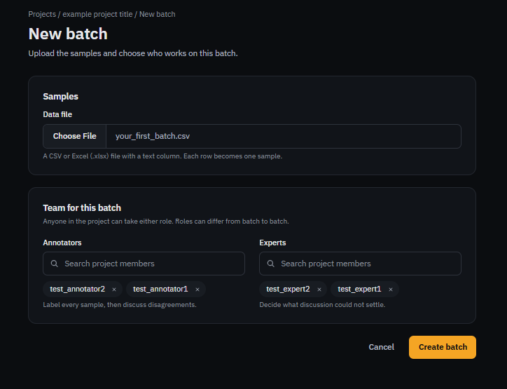
Figure 5: Batch Creation Modal. Uploading a dataset file and assigning specific annotators and experts to the batch.

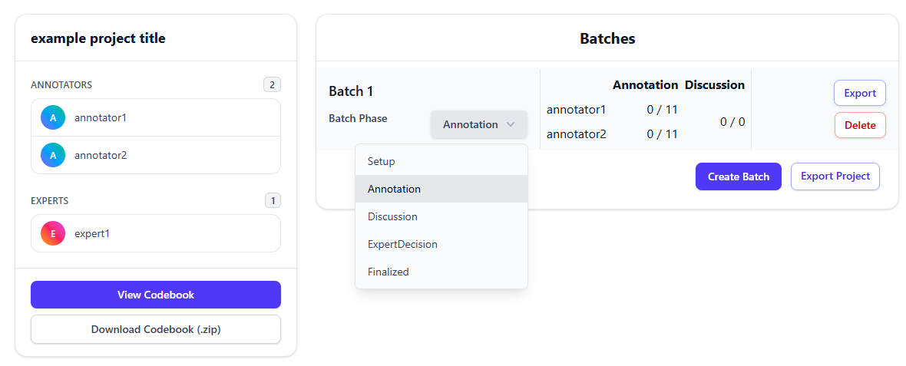
Figure 6: Active Batch Dashboard. Overview card displaying Batch 1 in the Annotation phase, showing real-time annotation progress per user.
3. First Codebook
After creating a batch, the Expert writes the initial annotation guidelines (Codebook):
Click View Codebook on the project dashboard.
Click Edit, enter the initial guideline instructions, write a rationale for the initial setup, and save.

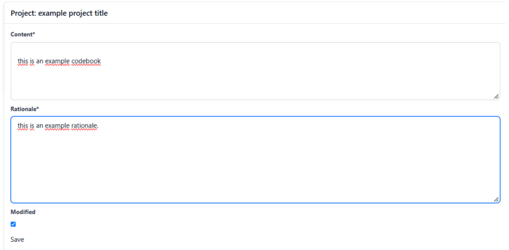
Figure 7: Initial Codebook Setup. Editor interface where Experts input first instructions and save the initial Codebook commit.
4. Resolve Disagreements and Edit the Codebook
When annotators complete peer discussion without reaching consensus on a sample, the batch transitions to the ExpertDecision phase.
Click Resolve on the batch card to open the adjudication panel.
Review the sample text, individual annotator labels, and the Annotators chat transcript.
Select the final adjudicated label for the sample.
Edit the Codebook instructions in the right-hand panel to address the underlying underspecification (e.g., adding an edge case rule).
Enter a detailed rationale explaining your decision and click Save.
Important Note: In order for annotators to see highlighted Codebook changes when starting a new batch, the subsequent batch must already be created and in
Setupmode when the Codebook edit takes place.

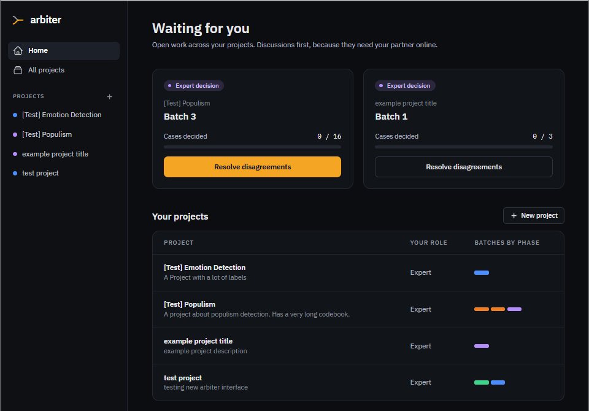
Figure 8: Unresolved Disagreement Alert. Batch dashboard card indicating cases needing expert adjudication via the “Resolve” button.

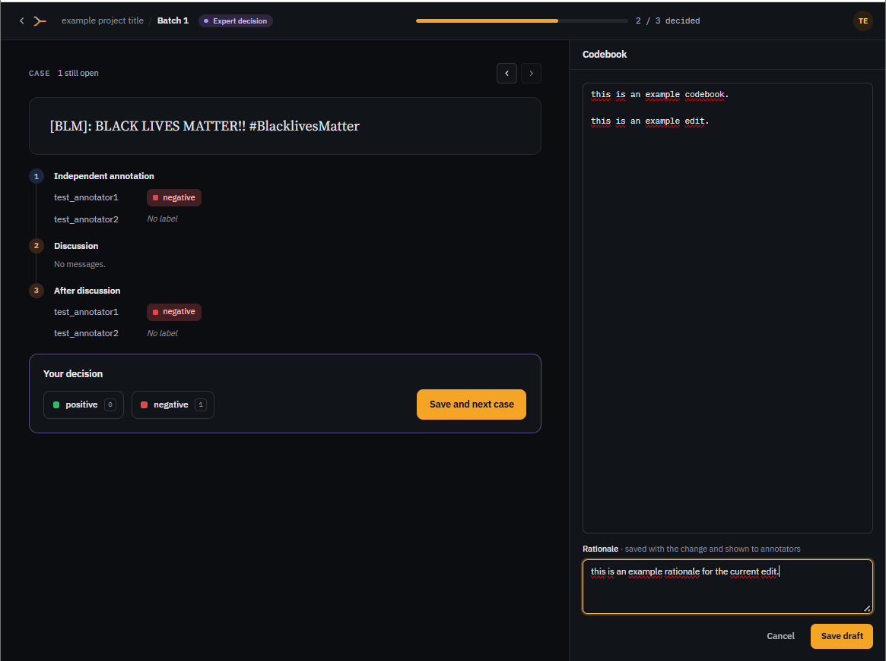
Figure 9: Expert Adjudication & Codebook Revision Interface. Comprehensive panel displaying sample text, annotator labels, chat history, final label selection, Codebook rule editing, and rationale logging.
5. Export Batch Data After Annotation and Discussion
When all annotations, discussions, and expert adjudications for a batch are complete:
Click Export on an individual batch card to download its final labels, discussion transcripts, and revision history.
Click Export Project to download the complete dataset and full Git-backed audit trail for the entire project.

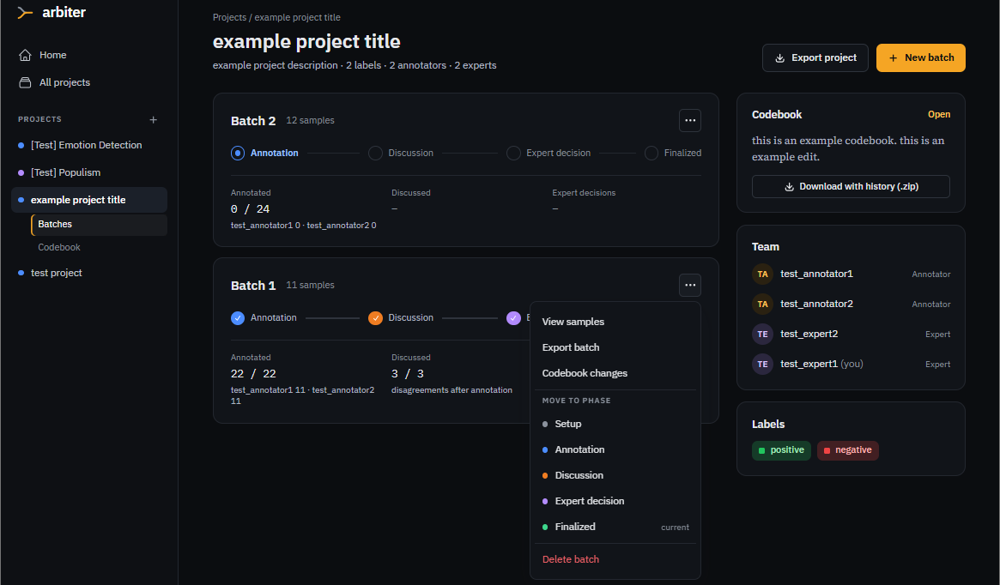
Figure 10: Data Export Dashboard. Finalized batch view offering individual batch or full project data export options.
3. Annotator User Guide
The Annotator role focuses on independent labeling, peer discussion of conflicting samples, and staying synchronized with evolving Codebook guidelines.
Project Dashboard View
When logging in, Annotators see a summary of all assigned projects, active batches, and current phase statuses.

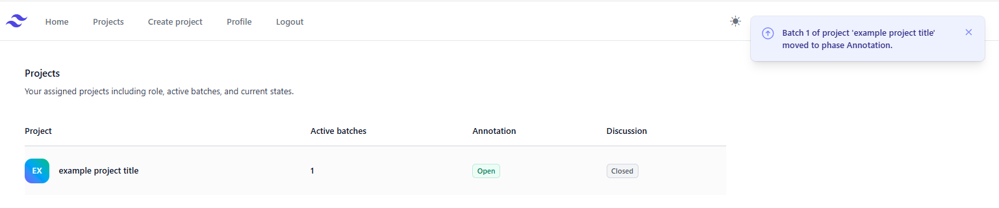
Figure 11: Annotator Home Dashboard. Overview of assigned projects, count of active batches, and current phase indicator.
1. First Batch Overview & Codebook View
Clicking on a project opens the batch management view:
Start Annotation: Opens the labeling interface for the assigned batch.
View Codebook: Opens the current annotation guidelines.
Open Codebook Changes: Displays the codebook view showing newly added rules since the previous batch.

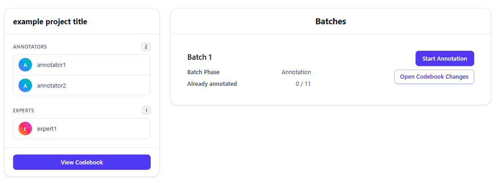
Figure 12: Annotator Batch Overview Card. Displaying assigned samples (0/11 annotated) and action buttons.

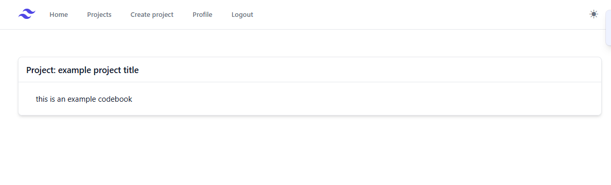
Figure 13: Codebook. Displaying instructions before any batch edits occur.
2. Annotation Phase
In the Annotation phase, annotators label each sample independently:
Read the presented text sample.
Click the appropriate candidate label button (or use custom keyboard shortcuts).
Navigate through samples using arrow buttons or keyboard shortcuts.
When finished, click Finalize annotation.

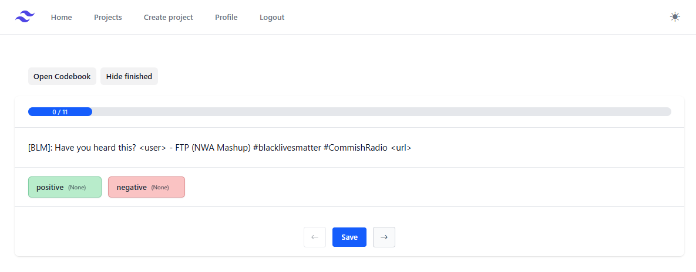
Figure 14: Annotation Interface. Single-sample labeling screen with progress bar, label selection buttons, and navigation controls.

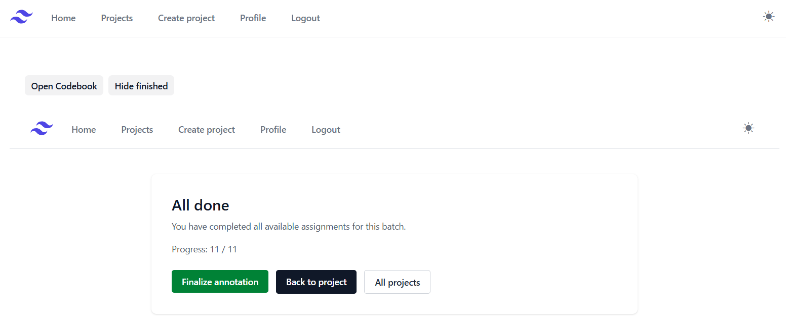
Figure 15: Finalize Batch. Completion prompt displayed when all samples in a batch have been labeled.
Keyboard Shortcuts
The annotation interface supports hotkeys for rapid labeling and navigation:
Left Arrow Key ($\leftarrow$): Move to the previous sample.
Right Arrow Key ($\rightarrow$): Move to the next sample.
Enter Key ($\hookleftarrow$): Save annotation (transmits current label selections to the server).
Custom Hotkeys: Custom key bindings defined during project setup (e.g., key
Afor Positive, keyBfor Negative).
3. Peer Discussion Phase
When independent annotation is complete and label mismatches exist between annotators, the batch transitions to the Discussion phase.
Click Start Discussion on the batch card.
The split-screen discussion interface displays:
Left Panel: The sample text, your label, and your peer’s label.
Right Panel: A real-time chat window.
Discuss the sample with your peer.
If you reach consensus, update your label selections. If you remain in disagreement, leave the conflicting labels as-is to escalate the sample to the Expert. Click Save & Done.

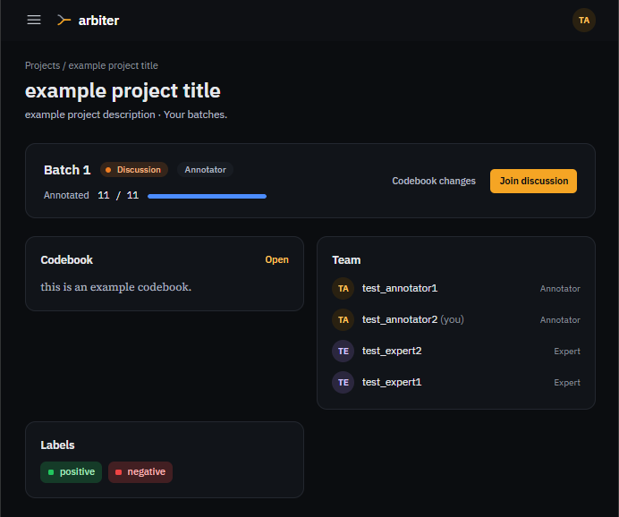
Figure 16: Peer Discussion Alert. Batch card notifying annotators that independent labeling is complete and peer discussion is open.

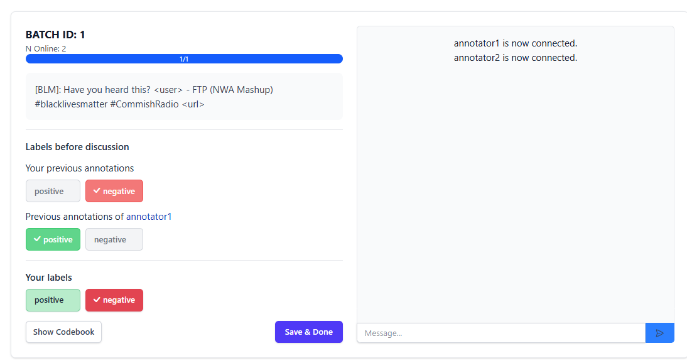
Figure 17: Real-Time Peer Discussion Interface. Split-screen workspace showing conflicting label choices, connection status, and live chat messaging.
4. View Codebook After Update
When the Expert adjudicates an escalated sample and updates the guidelines:
Upon entering the next batch, click Open Codebook Changes.
The Codebook view highlights all newly added or modified rules in highlighted format.

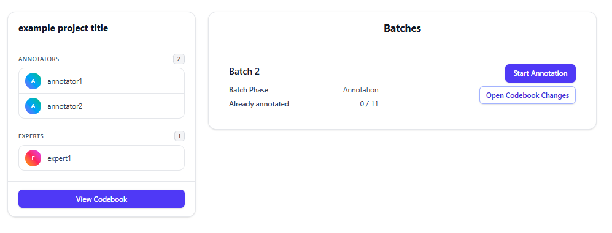
Figure 18: Codebook Update. Button on new batch card indicating updated guidelines are available.

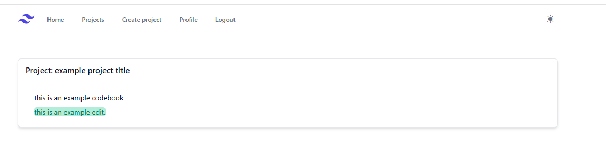
Figure 19: Highlighted Codebook Edits View. Updated guideline screen with newly added rules highlighted in green.
4. Admin User Guide
Administrators manage system deployment, user account creation, user group assignments, and Django permissions. Access the admin interface at /admin using administrator credentials.
1. Admin Homepage
Log in at http://<your-server-ip>/admin. The dashboard provides quick access to User and Group management, along with a log of recent administrative actions.

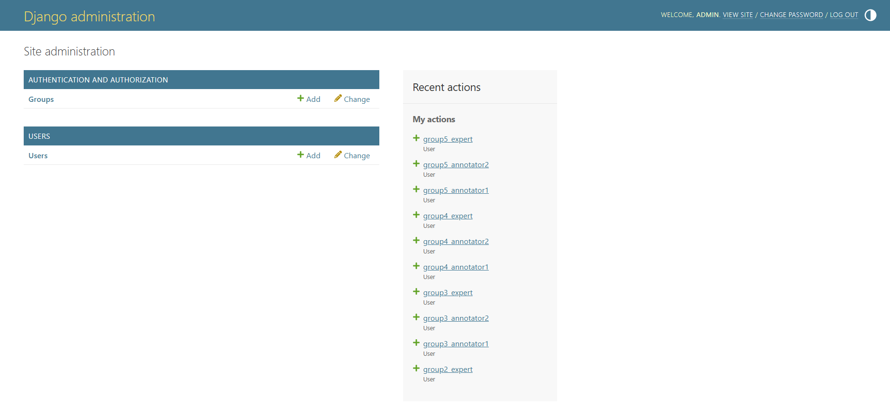
Figure 20: Django Administration Homepage — Central management portal for site administration, user accounts, and system logs.
2. Add Users
To register new Annotators or Experts:
Under Users, click + Add.
Enter a unique username and password.
Click Save to create the user account.

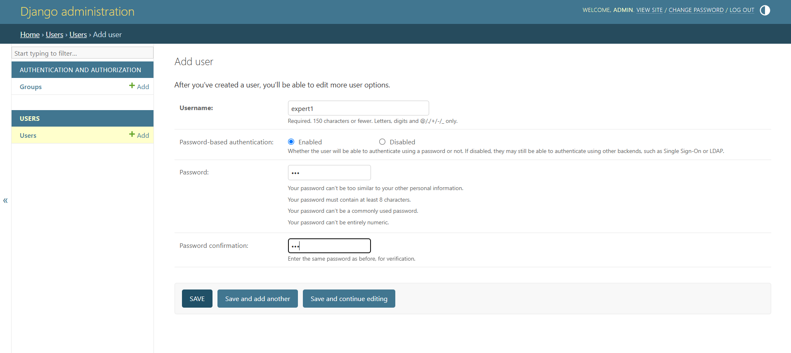
Figure 21: User Registration Form — Admin form for creating new user credentials.
3. Manage User Groups
Organize users into functional groups to streamline role assignments:
Navigate to Groups under Authentication and Authorization.
Use the dual-list selector to assign users to specific system groups (e.g., Annotators, Experts).

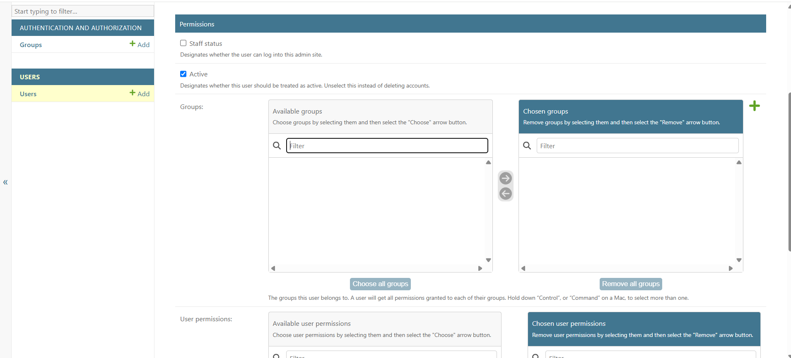
Figure 22: User Group Management — Interface for assigning users to designated functional groups.
4. Manage User Permissions
Fine-tune model-level access rights for specific accounts or groups:
Open a user account profile in the admin portal.
In the User permissions section, select specific Django model permissions (e.g.,
Expert | codebook draft | Can add codebook draft,Projects | batch | Can add batch).Click Save to enforce permission settings.

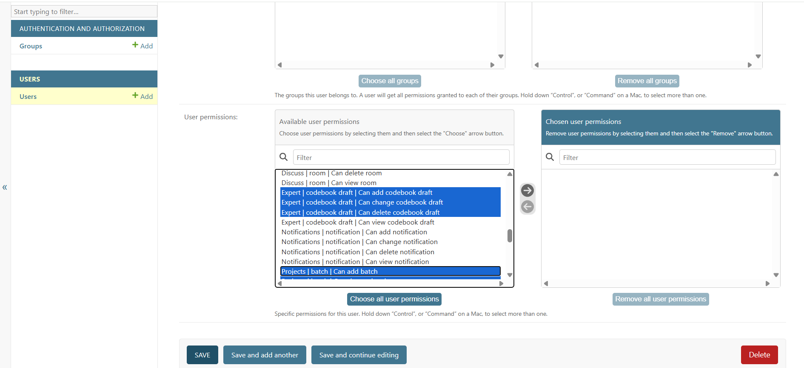
Figure 23: Fine-Grained User Permissions — Selector panel for assigning specific system and model permissions to user profiles.